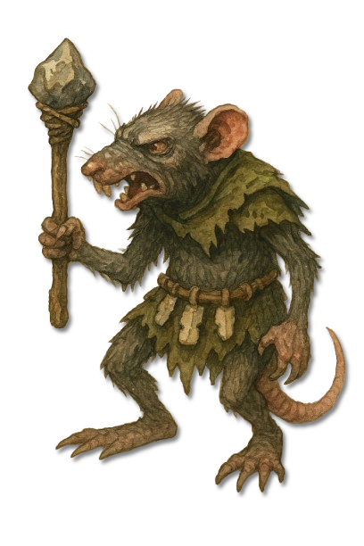
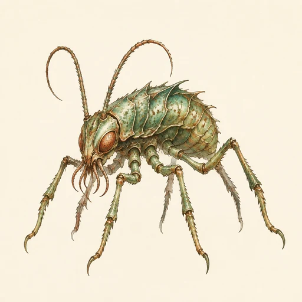
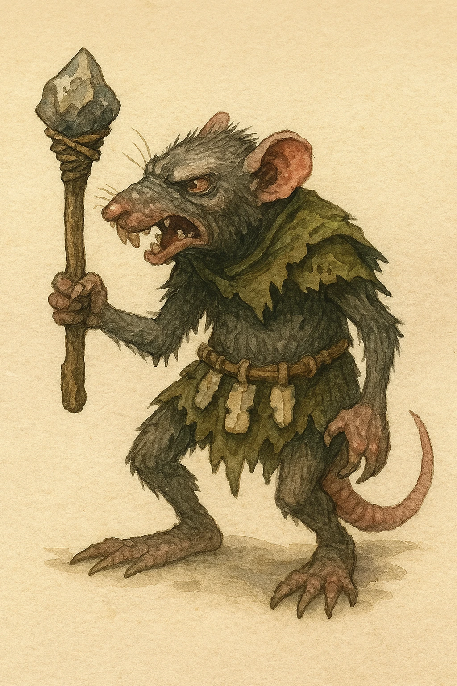

Infestiiden
Naga
Eine gedrungene, rattenähnliche Infestiide, die Nergaloths Einfluss mit Werkzeug, Rudelinstinkt und zäher Anpassung verbreitet.

KreaturenarchivAleria und infernale Sphären · Nergaloths Einflussbereiche · Archivblatt IV / 09
Infernale Ausbreitungswesen unter Nergaloths Einfluss
Infestiiden sind infernale Wesen unter Nergaloths Einfluss, deren Wirken auf Eindringen, Festsetzen und fortschreitende Ausbreitung gerichtet ist. Die Naga ist bislang die einzige benannte Gattung der Tafel; neun weitere Stellen bleiben offen, damit spätere Überlieferungen ohne erfundene Arten ergänzt werden können.

„Eine Infestiide ist selten nur das Tier vor dir; prüfe immer den Weg, den sie nahm, und die Spuren, die hinter ihr zurückblieben.“Arbeitsregel der alerischen Seuchenwacht
Sechs Merkmale · Skala 1–10
Das Infestiiden-Diagramm richtet sich nach ihrer Funktion als Ausbreitungswesen. Es bewertet Festsetzung, verborgene Präsenz, körperliche Anpassung und die Wirkung konsequenter Reinigung.
Quelle der Einordnung: Aus der Zuordnung zu Nergaloth, der Benennung als Infestiiden und der einzigen bildlich überlieferten Gattung Naga vorsichtig ergänzt
Infestiiden sind infernale Wesen unter Nergaloths Einfluss. Ihre gemeinsame Prägung liegt weniger in einer einheitlichen Gestalt als in der Art, wie sie in einen Lebensraum eindringen, sich festsetzen und ihre Anwesenheit ausweiten.
Da nur eine Gattung benannt ist, trennt das Archiv gesicherte Beobachtung klar von vorsichtiger Einordnung.
Als Schöpfer und ordnende Macht gilt Nergaloth. Infestiiden tragen diesen Einfluss in Körper, Verhalten und Ausbreitung weiter, ohne dass jede Form dieselben Merkmale besitzen muss.
Die Naga erscheint als gedrungene, rattenähnliche und aufrecht gehende Gestalt. Sie nutzt Werkzeuge und kann deshalb nicht wie ein gewöhnliches Tier eingeschätzt werden.
Weitergehende Aussagen über Rang, Sprache oder Verbreitung bleiben offen, bis ein eigenes Dossier vorliegt.
Eine einzelne Sichtung kann Teil eines größeren Befalls sein. Wiederkehrende Wege, beschädigte Vorräte und ungewöhnlich gleichförmige Spuren verdienen daher ebenso viel Aufmerksamkeit wie das sichtbare Wesen selbst.
Funde sollten getrennt dokumentiert werden: das beobachtete Wesen, mögliche Rückzugswege und Veränderungen in der Umgebung. So lässt sich vermeiden, eine unbekannte Art vorschnell zu benennen.
Frühe Eindämmung ist wirksamer als die Jagd auf verstreute Einzelwesen. Zugänge, Nahrung und mögliche Brutorte müssen gesichert und anschließend gereinigt werden.
Da neun Formen unbekannt bleiben, dürfen Waffenwirkung und Schutzmaßnahmen nicht von der Naga auf jede Infestiide übertragen werden.